Eventyret
Du lager et action-eventyr med sverd, fiender, hemmelige rom og en boss i et fangehull, i samme stil som Zelda-spillene på Game Boy Advance. Hvert steg er én økt, og hver økt starter med en ny fil der det som ble laget forrige gang, allerede er på plass.
Slik jobber du
- Åpne mappen
Eventyreti VS Code eller IDLE. - Hver økt har sin egen fil:
steg1.py,steg2.py… Kjør den med F5. - Der det står
OPPGAVEogpass, skal du skrive koden. - Kjør spillet ofte. Får du en feil, står den i rødt i spillvinduet og i terminalen.
- Ikke endre
spillmotor.py– den gjør jobben bak kulissene. - Vil du beholde noe du har laget selv, kopierer du det over i neste stegfil.
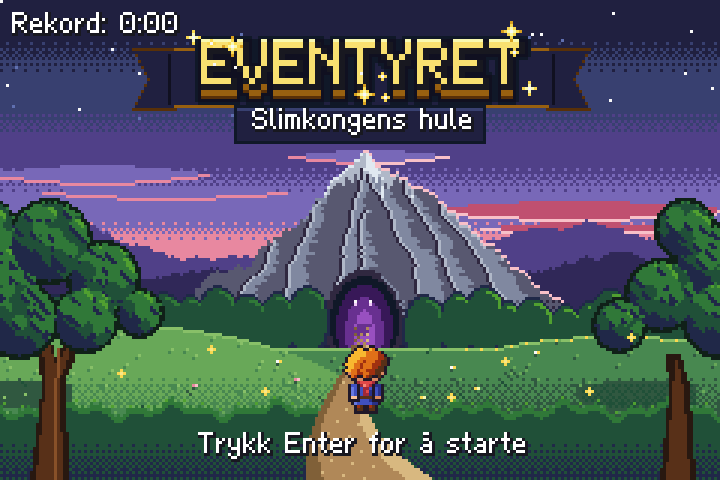
De 8 stegene
- 1Kart og bevegelse – I dag lager du starten på eventyret: en eng med gress, en sti, et lite vann og noen steiner.
- 2Animasjon og flere rom – I dag får helten liv: han snur seg dit han går, og beina beveger seg.
- 3Sverdet – I dag får helten et sverd! Trykk mellomrom, så svinger han det i retningen han ser.
- 4Fiender – I dag kommer fiendene! Slimet hopper tilfeldig rundt, og flaggermusa flyr rett mot helten.
- 5Liv og skade – Nå blir det farlig! Fiendene skader helten når de kommer borti ham.
- 6Ting og hemmeligheter – Verden fylles med ting: mynter som snurrer, hjerter som fiendene slipper, og Gamle Ragna som har noe viktig å fortelle.
- 7Fangehullet og bossen – Bak den låste døra venter fangehullet: fakler som blafrer, krukker du kan knuse, en bryter som får klossene til å forsvinne – og innerst inne SLIMKONGEN! Den venter, hopper mot deg og brøler så småslimene kommer.
- 8Ferdigstilling – Nå gjør vi spillet ferdig: tittelskjerm, musikk som passer til hvert sted, og en tidtaker – hvor fort klarer du å beseire Slimkongen? Rekorden lagres i en fil.
Kart og bevegelse
I dag lager du starten på eventyret: en eng med gress, en sti, et lite vann og noen steiner. Helten skal gå med piltastene, holde seg på skjermen og stoppe når han går inn i noe.
Kom i gang
Åpne steg1.py og kjør den. Du ser engen og helten, men helten står helt stille. Les kommentarene øverst i fila, og finn funksjonen gaa(). Der er det bare opp som virker ennå – prøv pil opp!
Fil: steg1.py
Teori til dette steget: 1. Hvordan et program kjører · 2. Variabler og regning · 3. Koordinater og skjermen · 5. Valg: if, elif og else · 6. Spill-løkka, taster og tellere · 7. Funksjoner · 9. Lister · 11. Ordbøker (dictionaries) · 12. Figurer, objekter og kollisjon
Nytt i dag
- spill-løkka: oppdater() 60 ganger i sekundet
- koordinater og piksler (y går nedover)
- kartet som en liste med tekst
- kollisjon med rute_ved(x, y)
- treffboks (bare føttene)
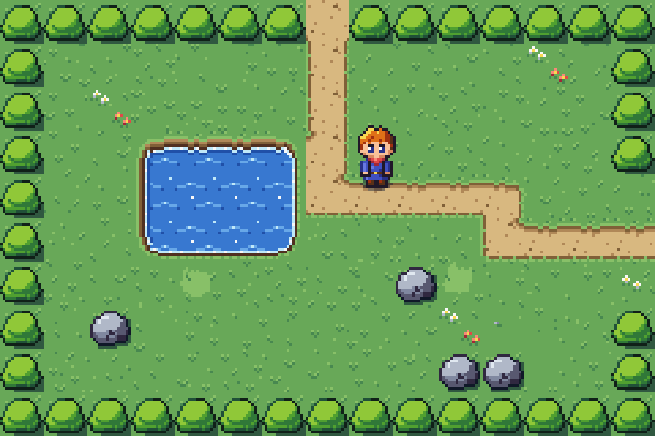
Forklaring av koden
Bla gjennom forklaringen før du begynner, og gå tilbake til den når du står fast.
Den viser koden i steg1.py, hva som skjer på skjermen, og hva programmet husker.
Der det står OPPGAVE, er det du som skal skrive koden.
Åpne forklaringen i stort vindu ↗ · Neste: mellomrom eller → (klikk i forklaringen først)
Oppgavene
I steg1.py står det OPPGAVE og pass der
det mangler kode. Bytt ut pass med din egen kode. Kjør spillet ofte!
1. Gå i alle retninger if-setning
Få helten til å gå ned, til venstre og til høyre. Se hvordan
opper laget: når tasten holdes, blirdyminus farten.- ned:
dyblirfart - venstre:
dxblir-fart - høyre:
dxblirfart
Hint 1
Kopier
if tast_holdes("opp"):-blokken tre ganger og bytt tastenavn og variabel.Hint 2
Tastene heter
"ned","venstre"og"hoyre"(uten ø). For eksempel:if tast_holdes("hoyre"): dx = fart- ned:
2. Hold deg på skjermen koordinater
Hold helten innenfor skjermen. Skjermen er
BREDDE(240) piksler bred ogHOYDE(160) høy. Helten er 16 bred og 24 høy, såny_xmå være mellom 0 ogBREDDE - 16, ogny_ymellom 0 ogHOYDE - 24.Hint 1
Er
ny_xmindre enn 0? Da setter du den til 0. Gjør det samme for de tre andre kantene.Hint 2
if ny_x < 0: ny_x = 0 if ny_x > BREDDE - 16: ny_x = BREDDE - 16Gjør det samme for
ny_ymed 0 ogHOYDE - 24.3. Stopp ved hindringer funksjon som gir True/False
Flytt helten bare hvis han kan gå dit (bruk
kan_gaa). Funksjonenkan_gaa(helt, x, y)girTruehvis helten kan stå på x, y. Sjekk x og y hver for seg, så helten kan gli langs en vegg.Hint 1
Bytt ut de to linjene
helt.x = ny_xoghelt.y = ny_ymed to if-setninger.Hint 2
if kan_gaa(helt, ny_x, helt.y): helt.x = ny_x if kan_gaa(helt, helt.x, ny_y): helt.y = ny_y4. Flere hindringer liste
Gjør buskene og vannet til hindringer også. Lista
HINDRINGERinneholder tegnene helten ikke kan gå gjennom. Tegn gjerne noen egne steiner (S) og busker (B) i kartetENGEN– husk at hver rad må ha 15 tegn.Hint 1
Buskene er
"B"og vannet er"~"i kartet.Hint 2
HINDRINGER = ["S", "B", "~"]5. Fire hjørner liste med tupler
Sjekk alle fire hjørnene av føttene, ikke bare midten. Nå kan helten gå halvveis inn i en stein, fordi bare midten av føttene sjekkes. Lag lista
hjornermed fire punkter: øverst til venstre, øverst til høyre, nederst til venstre og nederst til høyre.Hint 1
Høyre kant er
venstre + bredde - 1, og bunnen ertopp + hoyde - 1.Hint 2
hoyre = venstre + bredde - 1 bunn = topp + hoyde - 1 hjorner = [(venstre, topp), (hoyre, topp), (venstre, bunn), (hoyre, bunn)]
6. Løp! variabel
Hold inne shift for å løpe dobbelt så fort. Variabelen
farter vanligvisFART. Når"shift"holdes, skal den bliFART * 2.Hint 1
Bruk
tast_holdes("shift").Hint 2
if tast_holdes("shift"): fart = FART * 2
Ekstra utfordringer
For deg som blir ferdig tidlig. Her er det ingen hull i koden – du bestemmer selv hvordan.
A. Ditt eget kart
Tegn engen helt om: lag en elv tvers over, en sti rundt vannet eller en labyrint av busker. Prøv også
"gress_3"som et nytt tegn iRUTER.Vis hint
Et nytt tegn må stå i
RUTER, ellers får du en feilmelding som sier hva som mangler.B. Bump!
Spill lyden
"bump"når helten går inn i en hindring. Pass på at den ikke spilles 60 ganger i sekundet!Vis hint
Bruk
tast_trykketi stedet fortast_holdes, eller en variabel som husker om helten sto fast forrige gang.C. Skritteller
Tell hvor mange piksler helten har gått, og vis tallet med
Tekst(...)øverst i hjørnet.Hint 1
Du trenger
global skrittigaa()for å endre variabelen.Hint 2
Lag teksten utenfor funksjonen:
skritt_tekst = Tekst("0", 4, 4), og endreskritt_tekst.tekstinni.D. Fartsmåler
Spillet skal gå i 60 bilder i sekundet, ellers hakker det. Vis to tall nederst i hjørnet:
bilder_per_sekund()(hvor mange bilder spillet klarer) ogtregeste_bilde()(hvor mange millisekunder det tregeste av de siste 60 bildene tok). Over 17 ms betyr at et bilde gikk tapt, og over 25 ms merker du et hakk. Bruk måleren i de andre ytelsesoppgavene!Hint 1
Lag teksten utenfor funksjonene:
maaler = Tekst("", 4, 150, farge="white", skygge="#181820").Hint 2
En tekst som endres, må tegnes på nytt – det koster også! Oppdater den derfor bare hvert 30. bilde:
if int(tid() * 60) % 30 == 0:ogmaaler.tekst = f"{bilder_per_sekund()} b/s {tregeste_bilde()} ms".Hint 3
Gå rundt og se hvor tallene endrer seg. Hva skjer når du skifter rom?
Animasjon og flere rom
I dag får helten liv: han snur seg dit han går, og beina beveger seg. Og verden blir større – går du ut av kanten av skjermen, kommer du til et nytt rom, akkurat som i Zelda.
Kom i gang
Åpne steg2.py og kjør den. Helten går, men glir rundt uten å røre beina, og han ser alltid ned. Går du mot høyre på stien, stopper han ved kanten. Ser du trærne? De er nye.
Fil: steg2.py
Teori til dette steget: 2. Variabler og regning · 3. Koordinater og skjermen · 4. Tekst og f-strenger · 5. Valg: if, elif og else · 6. Spill-løkka, taster og tellere · 7. Funksjoner · 8. Lokale og globale variabler · 10. Løkker: for · 11. Ordbøker (dictionaries)
Nytt i dag
- global
- animasjon med teller, // og %
- f-string
- rom som en dictionary
- overgang()
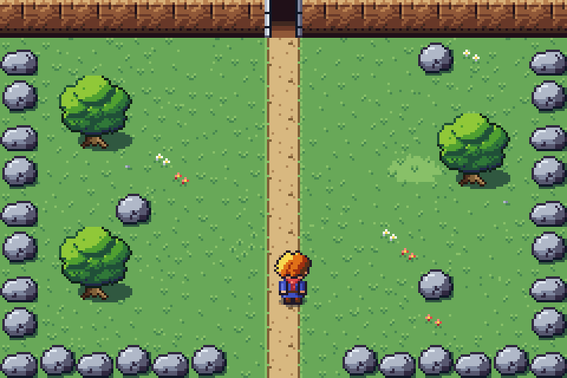
Forklaring av koden
Bla gjennom forklaringen før du begynner, og gå tilbake til den når du står fast.
Den viser koden i steg2.py, hva som skjer på skjermen, og hva programmet husker.
Der det står OPPGAVE, er det du som skal skrive koden.
Åpne forklaringen i stort vindu ↗ · Neste: mellomrom eller → (klikk i forklaringen først)
Oppgavene
I steg2.py står det OPPGAVE og pass der
det mangler kode. Bytt ut pass med din egen kode. Kjør spillet ofte!
1. Hvilken vei? global variabel
Husk hvilken retning helten går i (variabelen retning). Inni hver av de fire if-setningene for piltastene setter du
retningtil"opp","ned","venstre"eller"hoyre".Fordi
retningligger utenfor funksjonen, står detglobal retningøverst igaa(). Ellers ville Python laget en ny variabel som bare finnes inni funksjonen.Hint 1
Det står
# husk retningen herpå de fire stedene.Hint 2
retning = "opp"underdy = -fart, og så videre.2. Beina går f-string, // og %
Animer beina: bytt mellom bilde 1, 2, 3 og 4 mens helten går. Bildene heter for eksempel
helt_ned_1…helt_ned_4.- Tell opp
gaa_tellermed 1. gaa_teller // 8 % 4 + 1gir 1, 2, 3, 4, 1, 2 … (bytter hvert 8. bilde).- Sett
helt.bildemed en f-string.
Hint 1
//er heltallsdivisjon (17 // 8 = 2) og%er resten (6 % 4 = 2).Hint 2
gaa_teller = gaa_teller + 1 bilde_nr = gaa_teller // 8 % 4 + 1 helt.bilde = f"helt_{retning}_{bilde_nr}"- Tell opp
3. Stå stille else
Når helten står stille, skal han stå rett opp og ned (bilde 1) – og se i retningen han gikk sist.
Hint 1
Det er nesten samme linje som i oppgave 2.
Hint 2
helt.bilde = f"helt_{retning}_1"4. Ut av kanten if/elif
Finn ut om helten går ut av en kant, og hvilken. Sett
ut_avtil"venstre","hoyre","opp"eller"ned".- venstre:
ny_x < 0 - høyre:
ny_x > BREDDE - 16 - opp:
ny_y < -8(hodet får stikke litt ut, så føttene når øverste rad) - ned:
ny_y > HOYDE - 24
Koden under sjekker om rommet har en nabo den veien (
ut_av in ROM[rom]), og kaller daovergang(bytt_rom). Prøv stien mot høyre!Hint 1
Bruk
if,elif,elif,elif.Hint 2
if ny_x < 0: ut_av = "venstre" elif ny_x > BREDDE - 16: ut_av = "hoyre"… og så opp og ned på samme måte.
- venstre:
5. Motsatt side koordinater
Sett helten på motsatt side av skjermen i det nye rommet. Gikk han ut til høyre, skal han komme inn fra venstre (
helt.x = 0), og så videre.- ut til venstre:
helt.x = BREDDE - 16 - ut nedover:
helt.y = -8 - ut oppover:
helt.y = HOYDE - 24
Hint 1
Bruk
if ut_av == "hoyre":osv. innibytt_rom().Hint 2
Bare x endres når du går til siden, og bare y når du går opp eller ned.
- ut til venstre:
6. Et nytt rom dictionary
Lag et nytt rom over engen. Lag et kart
FJELLET(10 rader med 15 tegn), og legg det til iROM. Husk å koble rommene begge veier:ROM["fjellet"] = {"kart": FJELLET, "ned": "engen"} ROM["engen"]["opp"] = "fjellet"Viktig: Engen har en åpning øverst i kolonne 6, 7 og 8. Den nederste raden i det nye rommet må være åpen på de samme stedene, ellers havner helten inni en stein!
Hint 1
Kopier
ENGEN, gi den nytt navn og endre den. TegneneV(fjellvegg) ogH(huleinngang) passer fint på den øverste raden.Hint 2
Nederste rad kan for eksempel være
"SSSSSS.=.SSSSSS".
Ekstra utfordringer
For deg som blir ferdig tidlig. Her er det ingen hull i koden – du bestemmer selv hvordan.
A. Enda flere rom
Lag et rom til venstre for engen eller under skogen. Husk åpninger som passer på begge sider.
Vis hint
Engen har hekk (
h) i hele venstre kolonne – bytt noen av dem ut med gress i kartet først.B. Støvskyer
La det komme en liten støvsky ved føttene annenhver gang helten setter ned en fot:
effekt("stov", helt.midt_x, helt.y + 23).Vis hint
if gaa_teller % 16 == 0:C. Raskere bein
Når helten løper (shift), skal beina også gå fortere.
Vis hint
Del på 4 i stedet for 8 når shift holdes.
Sverdet
I dag får helten et sverd! Trykk mellomrom, så svinger han det i retningen han ser. Sverdet kutter ned busker så du finner nye veier – og det gnistrer når du slår i stein.
Kom i gang
Åpne steg3.py og kjør den. Alt fra steg 2 virker, men ingenting skjer når du trykker mellomrom. Finn funksjonene slaa() og kutt_busk(), og se på SVERD_PLASS øverst.
Fil: steg3.py
Teori til dette steget: 3. Koordinater og skjermen · 5. Valg: if, elif og else · 6. Spill-løkka, taster og tellere · 7. Funksjoner · 8. Lokale og globale variabler · 11. Ordbøker (dictionaries) · 12. Figurer, objekter og kollisjon
Nytt i dag
- tast_trykket()
- en teller som teller ned
- None
- dictionary med tupler
- endre_rute()
- effekt() og spill_lyd()
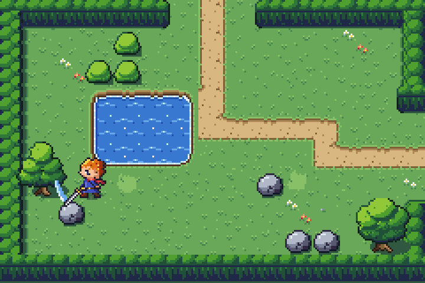
Forklaring av koden
Bla gjennom forklaringen før du begynner, og gå tilbake til den når du står fast.
Den viser koden i steg3.py, hva som skjer på skjermen, og hva programmet husker.
Der det står OPPGAVE, er det du som skal skrive koden.
Åpne forklaringen i stort vindu ↗ · Neste: mellomrom eller → (klikk i forklaringen først)
Oppgavene
I steg3.py står det OPPGAVE og pass der
det mangler kode. Bytt ut pass med din egen kode. Kjør spillet ofte!
1. Sving sverdet tast_trykket
Start slaget: sett slag til 15, bytt bilde på helten og spill lyden "sverd". Bildet heter
helt_slag_ned,helt_slag_opposv.Hint 1
tast_trykketer bare sann i det øyeblikket tasten trykkes ned – derfor slår ikke helten 60 ganger i sekundet.Hint 2
slag = 15 helt.bilde = f"helt_slag_{retning}" spill_lyd("sverd")2. Fram med sverdet dictionary, Figur
Lag sverd-figuren ved siden av helten, i retningen han ser.
SVERD_PLASS[retning]gir to tall: hvor langt mot høyre og nedover sverdet skal stå, regnet fra helten. Bildet hetersverd_ned,sverd_opposv.Hint 1
plass = SVERD_PLASS[retning]– da erplass[0]flyttet i x ogplass[1]flyttet i y.Hint 2
sverd = Figur(f"sverd_{retning}", helt.x + plass[0], helt.y + plass[1])3. Bort med sverdet teller
Tell slag ned til 0. Når slaget er ferdig, skal sverdet bort: kall
sverd.fjern(), settsverd = None, og gi helten vanlig bilde igjen.Hint 1
Tell bare ned hvis
slag > 0. Sjekk så om den akkurat ble 0.Hint 2
if slag > 0: slag = slag - 1 if slag == 0: if sverd != None: sverd.fjern() sverd = None helt.bilde = f"helt_{retning}_1"4. Stå stødig if
Helten skal ikke kunne gå mens han slår. I
oppdater(): kall baregaa()nårslager 0.Vis hint
if slag == 0:forangaa()– husk innrykk.5. Kutt buskene endre_rute
Er det en busk her? Bytt den ut med gress, og lag en blad-effekt.
kolograder allerede regnet ut, ogmidt_x,midt_yer midten av ruta.Hint 1
rute_ved(x, y) == "B"sier om det står en busk der.Hint 2
if rute_ved(x, y) == "B": endre_rute(kol, rad, ".") effekt("blader", midt_x, midt_y)6. Klirr! effekt
Slår du i en stein, skal det komme gnister og lyden "bump".
Vis hint
Nesten som oppgave 5, men med
"S",effekt("gnister", midt_x, midt_y)ogspill_lyd("bump")– og steinen skal bli stående.
Ekstra utfordringer
For deg som blir ferdig tidlig. Her er det ingen hull i koden – du bestemmer selv hvordan.
A. Hemmelig gang
Lag en hemmelig vei i skogen eller på engen som bare kan nås ved å kutte busker.
Vis hint
Du trenger bare å endre kartet – buskene kan allerede kuttes.
B. Lyden av blader
Finn en lyd i mappen lyder/ som passer når en busk kuttes, og spill den.
Vis hint
spill_lyd("...")inni if-setningen fra oppgave 5.C. Lengre slag
Prøv forskjellige verdier for
slag. Hva føles best? Hva skjer med 3 eller 60?Vis hint
Bare endre tallet i oppgave 1.
Fiender
I dag kommer fiendene! Slimet hopper tilfeldig rundt, og flaggermusa flyr rett mot helten. Slå dem med sverdet til de forsvinner i en røyksky.
Kom i gang
Åpne steg4.py og kjør den. Det står to slim på engen, men de rører seg ikke. Se på FIENDER og på lista ROM["engen"]["fiender"] – ["slim", 10, 2] er et slim i kolonne 10, rad 2.
Fil: steg4.py
Teori til dette steget: 5. Valg: if, elif og else · 7. Funksjoner · 9. Lister · 10. Løkker: for · 11. Ordbøker (dictionaries) · 12. Figurer, objekter og kollisjon · 14. Tilfeldighet og sannsynlighet
Nytt i dag
- liste med figurer
- attributter: fiende.liv, fiende.art
- random.choice og random.randint
- FIENDER-dictionary
- fiender[:] (kopi av lista)
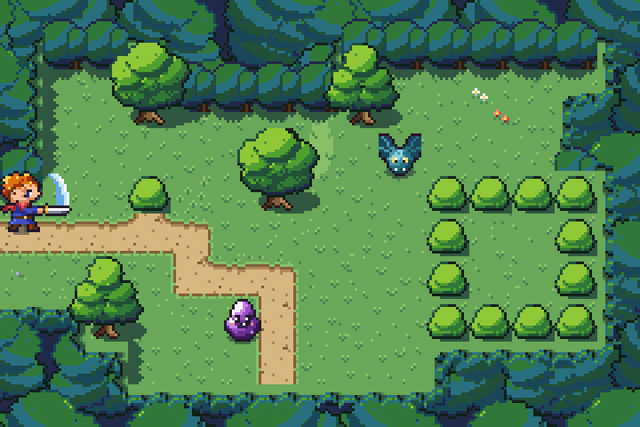
Forklaring av koden
Bla gjennom forklaringen før du begynner, og gå tilbake til den når du står fast.
Den viser koden i steg4.py, hva som skjer på skjermen, og hva programmet husker.
Der det står OPPGAVE, er det du som skal skrive koden.
Åpne forklaringen i stort vindu ↗ · Neste: mellomrom eller → (klikk i forklaringen først)
Oppgavene
I steg4.py står det OPPGAVE og pass der
det mangler kode. Bytt ut pass med din egen kode. Kjør spillet ofte!
1. Fiendene lever animer
Få fienden til å veksle mellom bilde 1 og 2 (bruk animer). Bildene heter
slim_1,slim_2,flaggermus_1ogflaggermus_2– ogarter"slim"eller"flaggermus".Hint 1
fart=12betyr at hvert bilde vises i 12 av 60 bilder i sekundet.Hint 2
fiende.animer([f"{art}_1", f"{art}_2"], fart=12)2. Slimet beveger seg attributter
Flytt slimet med slim.dx og slim.dy ganger farten – men bare hvis det kan gå dit. Bruk
kan_gaa(slim, ...)akkurat som for helten.Hint 1
ny_x = slim.x + slim.dx * slim.fartHint 2
if kan_gaa(slim, ny_x, slim.y): slim.x = ny_xGjør det samme for y.
3. Hopp hit og dit random
Tell ned slim.teller. Når den er 0, velg en ny tilfeldig retning og en ny teller.
slim.dxogslim.dy: et tilfeldig valg av -1, 0 eller 1slim.teller: et tilfeldig tall fra 30 til 90
Hint 1
random.choice([-1, 0, 1])velger ett av tallene i lista.Hint 2
slim.teller = slim.teller - 1 if slim.teller <= 0: slim.dx = random.choice([-1, 0, 1]) slim.dy = random.choice([-1, 0, 1]) slim.teller = random.randint(30, 90)4. Flaggermusa jakter sammenligning
Flytt flaggermusa litt nærmere maal_x og maal_y (bruk flaggermus.fart). Er flaggermusa til venstre for målet, flytter den seg mot høyre, og så videre. Flaggermusa flyr over alt, så den trenger ikke
kan_gaa. Gå til skogen for å teste.Hint 1
if flaggermus.x < maal_x:→ legg til farten.elif flaggermus.x > maal_x:→ trekk fra.Hint 2
Gjør det samme for y med
maal_y.5. Sverdet treffer for-løkke
Gå gjennom fiendene. Treffer sverdet en fiende, kall skade_fiende(fiende). Bruk
sverd.treffer(fiende).Skriv
for fiende in fiender[:]:–[:]lager en kopi av lista, så det går bra å fjerne fiender fra lista mens løkka går.Vis hint
for fiende in fiender[:]: if sverd.treffer(fiende): skade_fiende(fiende)6. Poff! liste: remove
Trekk fra ett liv. Har fienden 0 liv igjen, skal den forsvinne i en røyksky.
effekt("poff", fiende.midt_x, fiende.midt_y)og lyden"fiende_borte"fiende.fjern()tar den bort fra skjermenfiender.remove(fiende)tar den ut av lista- avslutt med
return
Vis hint
fiende.liv = fiende.liv - 1og såif fiende.liv <= 0:7. Slått tilbake for-løkke med range
Slå fienden 12 piksler bakover, i retningen helten ser – men ikke inn i en vegg.
RETNINGER[retning]gir ett skritt (dx, dy) i den retningen. Flytt fienden ett skritt om gangen, 12 ganger, og bare hvis den kan gå dit.Hint 1
steg = RETNINGER[retning]og såfor i in range(12):Hint 2
ny_x = fiende.x + steg[0] ny_y = fiende.y + steg[1] if kan_gaa(fiende, ny_x, ny_y): fiende.x = ny_x fiende.y = ny_y
Ekstra utfordringer
For deg som blir ferdig tidlig. Her er det ingen hull i koden – du bestemmer selv hvordan.
A. Flere fiender
Legg til flere fiender i rommene, eller lag et rom fullt av slim.
Vis hint
ROM["engen"]["fiender"]er en vanlig liste.B. Lat flaggermus
La flaggermusa bare jakte når helten er nærmere enn 80 piksler. Ellers flagrer den på stedet.
Vis hint
abs(flaggermus.x - helt.x) < 80 and abs(flaggermus.y - helt.y) < 80C. Skadetall
Vis
-1over fienden når den blir truffet.Vis hint
flytende_tekst("-1", fiende.midt_x, fiende.y - 2, farge="#f8b890")D. Ny fiende-art
Legg skjelettet (
skjelett_1,skjelett_2) inn iFIENDERog gi det en egen måte å bevege seg på.Hint 1
Skjelettet er 24 piksler høyt, så treffboksen bør bare være føttene:
(2, 16, 12, 8).Hint 2
Lag
flytt_skjelett(skjelett)og kall den fraflytt_fiender().E. Ett sverd holder
Nå lages et nytt sverd hver gang du slår, og det gamle kastes med
fjern(). Hver nye figur gir motoren litt ekstra arbeid med å legge alt i riktig rekkefølge på skjermen. Lag sverdet én gang, og gjør det bare synlig og usynlig. Slå mange ganger fort med fartsmåleren (ekstra 1D) på.Hint 1
Øverst: bytt
sverd = Nonemedsverd = Figur("sverd_ned", 0, 0)ogsverd.synlig = False.Hint 2
I
slaa(): i stedet forsverd = Figur(...)setter dusverd.bilde = f"sverd_{retning}",sverd.x,sverd.yogsverd.synlig = True.Hint 3
Når slaget er ferdig:
sverd.synlig = Falsei stedet forfjern()ogNone. Sjekker dusverd != Nonenoe sted, må det blisverd.synlig.
Liv og skade
Nå blir det farlig! Fiendene skader helten når de kommer borti ham. Helten har tre hjerter øverst på skjermen, blinker og blir slått bakover når han blir truffet – og mister han alle hjertene, er det GAME OVER.
Kom i gang
Åpne steg5.py og kjør den. Hjertene står øverst til venstre, men fiendene gjør ingen skade ennå. Se på skade_helt() – den er ferdig – og på de nye variablene liv, tilstand og dytt.
Fil: steg5.py
Teori til dette steget: 2. Variabler og regning · 5. Valg: if, elif og else · 6. Spill-løkka, taster og tellere · 8. Lokale og globale variabler · 12. Figurer, objekter og kollisjon · 13. Tilstand: spillet husker hva som skjer
Nytt i dag
- HUD i lag 3
- tilstandsvariabel ("spill" / "game_over")
- blink() og blinker
- rist_skjerm()
- liv i halve hjerter
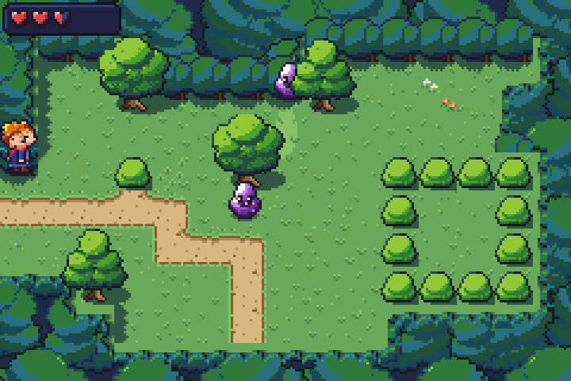
Forklaring av koden
Bla gjennom forklaringen før du begynner, og gå tilbake til den når du står fast.
Den viser koden i steg5.py, hva som skjer på skjermen, og hva programmet husker.
Der det står OPPGAVE, er det du som skal skrive koden.
Åpne forklaringen i stort vindu ↗ · Neste: mellomrom eller → (klikk i forklaringen først)
Oppgavene
I steg5.py står det OPPGAVE og pass der
det mangler kode. Bytt ut pass med din egen kode. Kjør spillet ofte!
1. Au! for-løkke, and/not
Gå gjennom fiendene. Treffer helten en fiende, og blinker han ikke, kall skade_helt(). Hvor mye skade fienden gjør, står i
FIENDER[fiende.art]["skade"].Hint 1
if helt.treffer(fiende) and not helt.blinker:Hint 2
skade_helt(FIENDER[fiende.art]["skade"], fiende)2. Hjertene if/elif/else
Velg "hud_hjerte_full", "hud_hjerte_halv" eller "hud_hjerte_tom" for hvert hjerte. Liv telles i halve hjerter:
- hjerte
ier fullt hvisliv >= i * 2 + 2 - halvt hvis
liv == i * 2 + 1 - ellers tomt
Prøv å regne det ut for
liv = 3: hjerte 0 er fullt, hjerte 1 er halvt, hjerte 2 er tomt.Hint 1
Hjertefigurene ligger i lista
hjerter, så hjerte nummer i erhjerter[i].Hint 2
if liv >= i * 2 + 2: hjerter[i].bilde = "hud_hjerte_full" elif liv == i * 2 + 1: hjerter[i].bilde = "hud_hjerte_halv" else: hjerter[i].bilde = "hud_hjerte_tom"- hjerte
3. Slått tilbake global, sammenligning
Dytt helten bort fra fienden: sett dytt til 10, og dytt_x og dytt_y til 2 eller -2. Står helten til venstre for fienden (
helt.midt_x < fiende.midt_x), skal han dyttes mot venstre (-2). Gjør det samme for y.Hint 1
bli_dyttet()er ferdig – den flytter helten så lengedytter over 0.Hint 2
dytt = 10 if helt.midt_x < fiende.midt_x: dytt_x = -2 else: dytt_x = 24. Game over tilstand
Sett tilstand til "game_over", spill lyden "game_over" og vis game over-skjermen. Figurene
game_over_bilde,game_over_titteloggame_over_tekstfinnes allerede – de er bare usynlige.Hint 1
Gjør dem synlige med
.synlig = True.Hint 2
Se i
oppdater(): nårtilstander"game_over", står alt annet stille.5. Prøv igjen global
Gi helten fullt liv, sett ham tilbake på engen, skjul game over-skjermen og sett tilstand tilbake til "spill". Helten startet på
x = 5 * RUTEogy = 6 * RUTE - 8. Husk å kalletegn_rom()etter at du har sattrom.Hint 1
Variablene som endres, står allerede i
global-linja.Hint 2
liv = MAKS_LIV rom = "engen" helt.x = 5 * RUTE helt.y = 6 * RUTE - 8
… skjul de tre figurene, kall
tegn_rom()og setttilstand = "spill".6. Lite liv! teller
Er liv 2 eller mindre (men over 0)? Tell opp, og spill "lite_liv" hvert 60. bilde (altså én gang i sekundet).
Hint 1
if liv <= 2 and liv > 0:Hint 2
lite_liv_teller = lite_liv_teller + 1 if lite_liv_teller >= 60: spill_lyd("lite_liv") lite_liv_teller = 0
Ekstra utfordringer
For deg som blir ferdig tidlig. Her er det ingen hull i koden – du bestemmer selv hvordan.
A. Flere hjerter
Gi helten fem hjerter. Hvor mye må du endre?
Vis hint
Bare
MAKS_LIV– hjertene lages med en løkke.B. Rødt blink
La skjermen blinke rødt når helten blir truffet.
Vis hint
blink_skjerm("#f87858", 0.1)iskade_helt().C. Farligere flaggermus
La flaggermusa gjøre et helt hjerte i skade, og vis skaden med
flytende_tekstover helten.Vis hint
Endre
"skade"iFIENDER.
Ting og hemmeligheter
Verden fylles med ting: mynter som snurrer, hjerter som fiendene slipper, og Gamle Ragna som har noe viktig å fortelle. Et sted i skogen står en kiste med en nøkkel – og oppe ved fjellet er det en hule med en låst dør …
Kom i gang
Åpne steg6.py og kjør den. Gamle Ragna står rett under helten – gå ned til henne og trykk mellomrom. Du ser mynter og en myntteller øverst til høyre, men myntene står stille og kan ikke plukkes opp. Gå til fjellet: nå kommer du inn i hulen!
Fil: steg6.py
Teori til dette steget: 4. Tekst og f-strenger · 7. Funksjoner · 9. Lister · 10. Løkker: for · 11. Ordbøker (dictionaries) · 12. Figurer, objekter og kollisjon · 13. Tilstand: spillet husker hva som skjer · 14. Tilfeldighet og sannsynlighet
Nytt i dag
- liste med ting i hvert rom
- plukke opp med treffer()
- dialog: liste med replikker + teller
- endre_kart() som husker endringen
- tilstandene "prat" og "jubel"
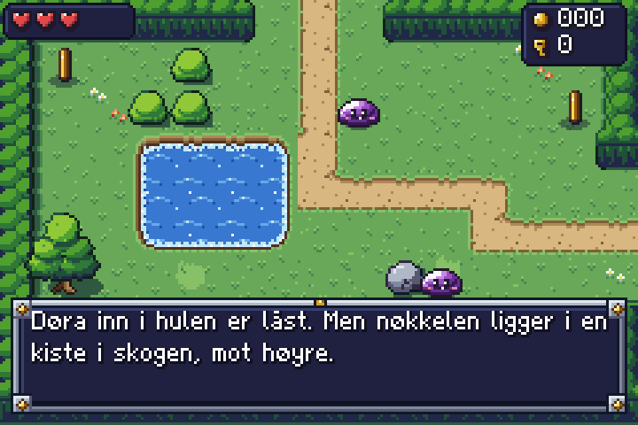
Forklaring av koden
Bla gjennom forklaringen før du begynner, og gå tilbake til den når du står fast.
Den viser koden i steg6.py, hva som skjer på skjermen, og hva programmet husker.
Der det står OPPGAVE, er det du som skal skrive koden.
Åpne forklaringen i stort vindu ↗ · Neste: mellomrom eller → (klikk i forklaringen først)
Oppgavene
I steg6.py står det OPPGAVE og pass der
det mangler kode. Bytt ut pass med din egen kode. Kjør spillet ofte!
1. Snurrende mynter animer
Få myntene til å snurre (bilde mynt_1, mynt_2, mynt_3 og mynt_4).
Hint 1
Bare når
art == "mynt".Hint 2
ting.animer(["mynt_1", "mynt_2", "mynt_3", "mynt_4"], fart=8)2. Plukk opp mynter elif
Plukk opp mynter på samme måte som hjertene over: én mer mynt, lyden "mynt" og effekten "glitter". Avslutt med
fjern_ting(ting)– den fjerner mynten, også fraROM, så den ikke kommer tilbake.Hint 1
Fortsett etter hjerte-blokken med
elif ting.art == "mynt":på samme innrykk somif ting.art == "hjerte":.Hint 2
elif ting.art == "mynt": mynter = mynter + 1 spill_lyd("mynt") effekt("glitter", ting.midt_x, ting.midt_y) fjern_ting(ting)3. Fiender slipper ting random
Trekk et tall fra 1 til 3. Er det 1, slipper fienden et hjerte. Er det 2, en mynt. Bruk
lag_ting("hjerte", fiende.x, fiende.y).Hint 1
tall = random.randint(1, 3)Hint 2
if tall == 1:…elif tall == 2:…4. Kisten liste i liste
Åpne kisten: nytt bilde, lyden "kiste", gi helten nøkkelen og la ham juble. Husk også å sette kiste.info[3] til None, så kisten er tom neste gang.
kiste.infoer lista fraROM, for eksempel["kiste", 11, 5, "nøkkel"].innholder alleredekiste.info[3]. Funksjonenjubel(innhold)er ferdig.Kisten står i skogen, gjemt bak noen busker.
Hint 1
Bildet heter
"kiste_aapen", og nøklene telles inokler.Hint 2
kiste.bilde = "kiste_aapen" spill_lyd("kiste") kiste.info[3] = None if innhold == "nøkkel": nokler = nokler + 1 jubel(innhold)5. Den låste døra if/else, endre_kart
Har helten en nøkkel? Bruk den: bytt "L" med "D", og spill "laas_opp". Hvis ikke: spill "laast", og vis teksten "Låst!".
Bruk
endre_kart(kol, rad, "D")– den endrer både skjermen og kartet iROM, så døra er åpen også neste gang du kommer. Døra er øverst i hulen.Hint 1
if nokler > 0:– husk å trekke fra nøkkelen.Hint 2
flytende_tekst("Låst!", x, y)viser teksten.6. Gamle Ragna snakker liste med indeks
Gå til neste replikk. Var det den siste, skal vinduet bort og tilstand bli "spill". Nå lukkes vinduet med en gang – Ragna rekker bare å si én ting.
- tell opp
replikk_nr - er
replikk_nr < len(replikker): visreplikker[replikk_nr]iprat_tekst.tekstog spill"tekst_pip" - ellers: koden som står der nå
Hint 1
Flytt de tre linjene som står der, inn i en
else:.Hint 2
replikk_nr = replikk_nr + 1 if replikk_nr < len(replikker): prat_tekst.tekst = replikker[replikk_nr] spill_lyd("tekst_pip") else: ...- tell opp
Ekstra utfordringer
For deg som blir ferdig tidlig. Her er det ingen hull i koden – du bestemmer selv hvordan.
A. Si noe annet
Skriv om det Gamle Ragna sier i
RAGNA_SIER, eller legg til flere replikker.Vis hint
Vinduet har plass til tre linjer.
B. Smeden
Sett smeden (
smed_1,smed_2) et sted i verden. Han skal ha egne replikker.Vis hint
Legg
"smed"inn iFASTEog ibruk_foran(), og lag bildet ilag_ting()slik Ragna lages.C. Kiste med mynter
Lag en kiste som inneholder
"mynt"og gir helten 10 mynter.Vis hint
["kiste", 3, 3, "mynt"]– og enelif innhold == "mynt":iaapne_kiste.D. Ragna vet mer
La Ragna si noe annet når helten allerede har nøkkelen.
Vis hint
Lag en ny liste og velg med
if nokler > 0:ibruk_foran().
Fangehullet og bossen
Bak den låste døra venter fangehullet: fakler som blafrer, krukker du kan knuse, en bryter som får klossene til å forsvinne – og innerst inne SLIMKONGEN! Den venter, hopper mot deg og brøler så småslimene kommer.
Kom i gang
Åpne steg7.py og kjør den. Hent nøkkelen, åpne døra i hulen og gå inn i gangen. Faklene ser rare ut, og en rad med klosser stenger veien til bossrommet. Finn flytt_boss() og les hvordan den bytter mellom tilstandene.
Fil: steg7.py
Teori til dette steget: 6. Spill-løkka, taster og tellere · 10. Løkker: for · 13. Tilstand: spillet husker hva som skjer · 14. Tilfeldighet og sannsynlighet
Nytt i dag
- tilstandsmaskin: "vent", "hopp", "angrip"
- løkke inni en løkke (rader og kolonner)
- partikler()
- % for «hver tredje gang»
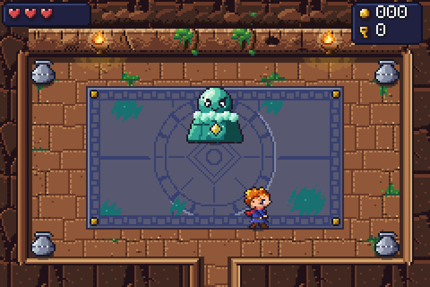
Forklaring av koden
Bla gjennom forklaringen før du begynner, og gå tilbake til den når du står fast.
Den viser koden i steg7.py, hva som skjer på skjermen, og hva programmet husker.
Der det står OPPGAVE, er det du som skal skrive koden.
Åpne forklaringen i stort vindu ↗ · Neste: mellomrom eller → (klikk i forklaringen først)
Oppgavene
I steg7.py står det OPPGAVE og pass der
det mangler kode. Bytt ut pass med din egen kode. Kjør spillet ofte!
1. Fakler animert rute
Gjør faklene (F) om til en animert rute med bildene fakkel_1 og fakkel_2. Husker du vannet? En liste med bilder i
RUTERgir en animert rute.Vis hint
RUTER["F"] = ["fakkel_1", "fakkel_2"]2. Knus krukkene partikler
Lag skår med partikler(), spill lyden "krukke" og fjern krukken. Halvparten av gangene skal det ligge et hjerte der krukken sto.
Hint 1
partikler(krukke.midt_x, krukke.midt_y, antall=12, farger=["#c87850", "#a05830", "#e8a070"], fart=1.5, tyngde=0.1, levetid=0.5)Hint 2
fjern_ting(krukke), ogif random.randint(1, 2) == 1:for hjertet.3. Bryteren rute_ved
Står helten på en bryter ("b")? Bytt den til "p" (med endre_kart), spill lyden "bryter" og kall fjern_klosser().
xogyer punktet under føttene til helten.Hint 1
Kolonnen er
int(x // RUTE)og radenint(y // RUTE).Hint 2
if rute_ved(x, y) == "b": endre_kart(int(x // RUTE), int(y // RUTE), "p")4. Klossene forsvinner nøstet løkke
Gå gjennom alle radene og alle kolonnene. Bytt hver "K" med "_", med en poff-effekt. Rist gjerne skjermen litt til slutt. Se hvordan
tegn_rom()går gjennom kartet for å finne trærne.Hint 1
for rad in range(len(kart)):og inni denfor kol in range(len(kart[rad])):Hint 2
if kart[rad][kol] == "K": endre_kart(kol, rad, "_") effekt("poff", kol * RUTE + 8, rad * RUTE + 8)5. Bossen hopper tilstandsmaskin
Flytt bossen med boss.dx og boss.dy (bare hvis den kan gå dit). Når telleren er 0, lander den: rist skjermen, lag effekten "stein" og gå tilbake til "vent". Sett
boss.teller = boss.vent_tidså den venter en stund før neste hopp.Hint 1
Flyttingen er som for slimet, med
kan_gaa(boss, ...).Hint 2
if boss.teller <= 0: rist_skjerm(0.3, 3) effekt("stein", boss.midt_x, boss.y + 28) boss.tilstand = "vent" boss.teller = boss.vent_tid6. Bossen kaller på hjelp funksjonskall
Når telleren er 0: lag to slim der bossen står (med lag_fiende), og gå tilbake til "vent". Bossen er 32 bred, så slimene kan stå på
boss.xogboss.x + 16, og påboss.y + 16.Hint 1
lag_fiende("slim", boss.x, boss.y + 16)Hint 2
Husk
boss.tilstand = "vent"ogboss.teller = boss.vent_tid.7. Bossen blir sint animer
Bossen blir sint når den har 5 liv eller mindre: rødt bilde og kortere ventetid. Bytt animasjonen til bildene
boss_skadetogboss_2, og settfiende.vent_tidtil 30.Vis hint
fiende.animer(["boss_skadet", "boss_2"], fart=10)
Ekstra utfordringer
For deg som blir ferdig tidlig. Her er det ingen hull i koden – du bestemmer selv hvordan.
A. Bossens livsmåler
Vis bossens liv som en rød stolpe øverst i bossrommet.
Vis hint
Rektangel(x, y, bredde, hoyde, farge)– endre.breddenår bossen mister liv.B. Et nytt angrep
Lag en fjerde tilstand, for eksempel "rull", der bossen suser tvers over rommet.
Vis hint
Legg til en
elif boss.tilstand == "rull":og velg den fra"vent".C. Hemmelig rom
Lag et sidekammer i hulen med en kiste full av mynter.
Vis hint
Husk åpninger som passer på begge sider, og
"fiender"og"ting"i det nye rommet.D. Rist med omtanke
Når skjermen rister, må hele skjermen tegnes på nytt i hvert bilde så lenge det varer. Bytt
rist_skjermmedboss.rist(...)når bossen lander, og medhelt.rist(...)når helten blir truffet. Da er det bare figuren som må tegnes på nytt. Se på fartsmåleren i bosskampen før og etter. Føles det fortsatt tungt?Hint 1
Effekten
"stein"rister skjermen av seg selv. Skru det av øverst i fila:EFFEKTER["stein"]["rist"] = 0.Hint 2
Litt sterkere figurrist veier opp:
boss.rist(0.3, 3).E. Ikke for mange slim
Bossen lager to nye slim hver tredje gang – uten stopp! Hvert slim må flyttes, sjekkes og tegnes hvert bilde. La bossen holde på i to minutter uten at du dreper slimene, og se på fartsmåleren. Gjør så at bossen bare lager nye slim når det er færre enn 4 i rommet.
Hint 1
Tell slimene med en løkke:
antall = 0, ogfor fiende in fiender:/if fiende.art == "slim":/antall = antall + 1.Hint 2
Lag de to nye bare
if antall < 4:– men gå tilbake til"vent"uansett.F. Én kloss om gangen
Når du trår på bryteren, forsvinner alle klossene, med hver sin røyksky, i ett og samme bilde – og spillet hakker et øyeblikk. Se på det tregeste bildet! La klossene forsvinne én og én med en liten pause mellom. Det er lettere for maskinen og ser kulere ut.
Hint 1
I
fjern_klosser(): legg(kol, rad)for hver K i en listeklosser_igjeni stedet for å fjerne dem med en gang.Hint 2
I
oppdater(): hvert 6. bilde (int(tid() * 60) % 6 == 0), hvis lista ikke er tom: ta ut den første medkol, rad = klosser_igjen.pop(0), og kallendre_kartogeffekt("poff", ...)for den.
Ferdigstilling
Nå gjør vi spillet ferdig: tittelskjerm, musikk som passer til hvert sted, og en tidtaker – hvor fort klarer du å beseire Slimkongen? Rekorden lagres i en fil. Spillet får også en pausemeny, slik ekte spill har. Og så: gjør spillet til ditt eget!
Kom i gang
Åpne steg8.py og kjør den. Spillet starter på en tittelskjerm – men du kommer ikke videre! Start med oppgave 1 og 2.
Fil: steg8.py
Teori til dette steget: 4. Tekst og f-strenger · 11. Ordbøker (dictionaries) · 13. Tilstand: spillet husker hva som skjer · 15. Filer, feilmeldinger og feilsøking
Nytt i dag
- spill_musikk() og stopp_musikk()
- Tekst med storrelse=2
- tid()
- lese og skrive en fil med open()
- copy.deepcopy()
- pause(True) og pause(False)
- meny med en liste og %
Forklaring av koden
Bla gjennom forklaringen før du begynner, og gå tilbake til den når du står fast.
Den viser koden i steg8.py, hva som skjer på skjermen, og hva programmet husker.
Der det står OPPGAVE, er det du som skal skrive koden.
Åpne forklaringen i stort vindu ↗ · Neste: mellomrom eller → (klikk i forklaringen først)
Oppgavene
I steg8.py står det OPPGAVE og pass der
det mangler kode. Bytt ut pass med din egen kode. Kjør spillet ofte!
1. Blinkende tekst tid() og %
La "Trykk Enter"-teksten blinke: synlig i 0,6 sekunder, borte i 0,4.
tid() % 1er desimalene av tiden (et tall fra 0 til 1), så en sammenligning girTrueellerFalse.Vis hint
trykk_tekst.synlig = tid() % 1 < 0.62. Start spillet overgang
Når spilleren trykker Enter, start et nytt spill med en overgang. Funksjonen
nytt_spill()er ferdig. Spill gjerne lyden"velg"også.Vis hint
overgang(nytt_spill)– uten parenteser baknytt_spill!3. Musikk dictionary
Spill musikken som hører til rommet. Hvert rom har en
"musikk"iROM. Er det samme musikk som før, fortsetter den bare.Vis hint
spill_musikk(ROM[rom]["musikk"])nederst itegn_rom().4. Minutter og sekunder return, // og %
Regn ut hele minutter (//) og sekundene som blir igjen (%). Gi tilbake "minutter:sekunder", for eksempel
tid_tekst(205)→"3:25"ogtid_tekst(65)→"1:05".Hint 1
minutter = int(sekunder // 60)ogsek = int(sekunder % 60)Hint 2
return f"{minutter}:{sek:02}"–:02gir alltid to sifre.5. Ny rekord! None, or
Er det ny rekord (ingen rekord fra før, eller raskere)? Lagre den, og skriv " NY REKORD!" bak teksten. Ellers: skriv hva rekorden er.
les_rekord()girNonehvis det ikke finnes noen rekord, oglagre_rekord(brukt)skriver den til filarekord.txt.Hint 1
rekord = les_rekord()og såif rekord == None or brukt < rekord:Hint 2
tekst = tekst + " NY REKORD!", og ielse:tekst = tekst + f" Rekorden er {tid_tekst(rekord)}."6. Pausemeny tilstand, % og if/elif
Lag en pausemeny: Escape fryser spillet og viser menyen, og pila velger mellom
"Fortsett","Musikk"og"Til tittelskjermen". Selve menyen (bildene, tekstene og pila) er ferdig:vis_pausemeny(),skjul_pausemeny()ogtegn_pausemeny(). Valgene står i listaPAUSEVALG, ogvalger nummeret på det valget pila peker på (0 er det øverste). Søk etteroppgave 6i fila.- a) Åpne og lukke: i
aapne_pause()setter dutilstandtil"pause"ogvalgtil 0, fryser spillet medpause(True)og viser menyen.lukk_pause()gjør det motsatte. Ioppdater(), rett førslaa(): trykker spilleren"escape", kaller duaapne_pause()og såreturn. (Escape inne i menyen lukker den igjen – det er ferdig.) - b) Flytt pila i
styr_pausemeny(): pil ned gjørvalgén større, pil opp én mindre. Bruk%så pila går rundt – ned fra det nederste valget gir det øverste. Prøv gjerne uten%først: hva skjer når du går forbi det siste valget? - c) I
velg_i_pausemeny()står teksten på valget ihva. Brukifogelif:"Fortsett"lukker menyen,"Musikk"slår musikken av eller på (byttmusikk_paa, og brukstopp_musikk()ellerspill_musikk(ROM[rom]["musikk"])), og"Til tittelskjermen"kallertil_tittelskjermen(). Til slutt: itegn_rom()skal musikken bare spilles hvismusikk_paaerTrue– ellers slår den seg på igjen i neste rom.
Test: mens menyen er åpen, skal fiendene stå stille, og tidtakeren for rekorden skal ikke telle. Det ordner
pause(True)– den fryser ogsåtid().Hint 1
a) Slik åpner du menyen:
tilstand = "pause" valg = 0 pause(True) vis_pausemeny()
I
lukk_pause():pause(False),skjul_pausemeny()ogtilstand = "spill". Ioppdater():if tast_trykket("escape"): aapne_pause() returnHint 2
b)
valg = (valg + 1) % len(PAUSEVALG). Med 3 valg blir 2 + 1 = 3, og3 % 3er 0 – pila hopper til toppen. Pil opp:valg = (valg - 1) % len(PAUSEVALG)(i Python er-1 % 3lik 2).Hint 3
c)
if hva == "Fortsett": lukk_pause() elif hva == "Musikk": musikk_paa = not musikk_paa if musikk_paa: spill_musikk(ROM[rom]["musikk"]) else: stopp_musikk() elif hva == "Til tittelskjermen": til_tittelskjermen()notsnurTruetilFalseog omvendt. Itegn_rom()setter duif musikk_paa:foranspill_musikk(...).- a) Åpne og lukke: i
7. Gjør spillet ditt eget! kreativt
Gjør spillet ditt eget! Lag nye rom, flytt fiender og ting, endre reglene … Husk: et nytt rom trenger "kart", "fiender", "ting" og "musikk", og åpninger som passer.
Forslag:
- en ny verden: endre kartene og lag flere rom
- nye fiender, eller sterkere og raskere fiender
- en butikk hos smeden der mynter kjøper hjerter
- et hemmelig rom bak buskene
- din egen historie i det Ragna sier
Hint 1
Ta én liten endring om gangen, og kjør spillet etter hver endring.
Hint 2
Se ekstraoppgavene fra de andre stegene for flere ideer.
Ekstra utfordringer
For deg som blir ferdig tidlig. Her er det ingen hull i koden – du bestemmer selv hvordan.
A. Spilletid i pausemenyen
Vis hvor lenge du har spilt, for eksempel «Tid 3:25», under pausemenyen mens den er åpen. Tiden står stille under pausen, så tallet står også stille.
Hint 1
Lag en
Tekstog legg den i listaPAUSEMENY(før løkka som gjør alt usynlig), så vises og skjules den sammen med menyen.Hint 2
I
tegn_pausemeny():spilletid.tekst = "Tid " + tid_tekst(tid() - starttid)– kall tekstenspilletid, ikketid_tekst(det navnet har funksjonen).B. Poeng
Regn ut poeng: mynter × 10 minus sekundene du brukte. Lagre beste poengsum i en egen fil.
Vis hint
Lag
les_poeng()oglagre_poeng()som kopier av rekord-funksjonene.C. Tidtaker på skjermen
Vis tiden som går nederst i hjørnet mens du spiller.
Vis hint
En
Tekstsom oppdateres medtid_tekst(tid() - starttid)ioppdater().D. Rulletekst
Lag en sluttskjerm med navnet ditt og «Takk for at du spilte!».
Vis hint
tittel_bildekan gjenbrukes som bakgrunn.E. Et nytt valg i pausemenyen
Bytt ut et valg i pausemenyen med noe eget, for eksempel «Avslutt» som lukker spillet med
avslutt().Vis hint
Bytt teksten i
PAUSEVALGog lag en nyelifivelg_i_pausemeny(). Rammen har plass til tre valg – vil du ha fire, må du lage valgene tettere (13 i75 + i * 13).
Bygg ut spillet ditt
Grafikk som ikke er brukt i stegene, men som ligger klar i mappen bilder/. Bruk den til
ekstra utfordringer eller når du lager spillet ditt eget. Skriv navnet uten .png.
Fiender
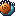
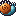
piggsnegl
16×16
En treg, blågrønn snegl med varmt, oransje spiralhus og pigger. Den strekker seg ut og trekker seg sammen.
Idé
Legg den til i FIENDER med lav fart og mye liv: "piggsnegl": {"liv": 4, "fart": 0.25, "skade": 1, "treffboks": (2, 6, 12, 10)}. Sett den i et rom: ["piggsnegl", 6, 4].
Bilder: piggsnegl_1, piggsnegl_2


sopphopper
16×16
En sint liten sopp med høy, lilla klokkehatt og siksakbånd. Bilde 2 er i lufta.
Idé
Rask, men svak: "sopphopper": {"liv": 1, "fart": 0.9, "skade": 1, "treffboks": (3, 6, 10, 10)}. Fin i skogen.
Bilder: sopphopper_1, sopphopper_2
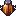
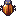
steinbille
16×16
En bille med blankt, rustrødt skall og gullstriper. Beina går når den animeres.
Idé
Hard å slå: "liv": 3. Gjør at den bare tar skade bakfra med en if på retningen til helten.
Bilder: steinbille_1, steinbille_2
lyktespokelse
16×16
En levende papirlykt med glødende ansikt og en liten flamme over seg. Den svever opp og ned.
Idé
Passer i hulen. La lykta fly gjennom vegger: ikke sjekk HINDRINGER når den flytter seg.
Bilder: lyktespokelse_1, lyktespokelse_2
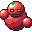
golem (boss)
32×32
En ny boss: steingolem med lysende øyne og store never som løftes etter tur.
Idé
Bytt ut Slimkongen eller lag et nytt bossrom: ["golem", 6.5, 2] og "golem": {"liv": 15, "fart": 0.4, "skade": 2, "treffboks": (2, 8, 28, 24)}. Vis golem_skadet når den blir truffet, slik koden gjør med boss_skadet.
Bilder: golem_1, golem_2, golem_skadet
Folk og dyr
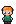
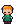
barn
16×24
En jente med rødt hår og grønn kjole som hopper og blunker.
Idé
Lag henne som Ragna: barn = Figur("barn_1", 3 * RUTE, 7 * RUTE - 8, skygge=True) og barn.animer(["barn_1", "barn_2"], fart=20). Gi henne egne replikker.
Bilder: barn_1, barn_2
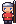
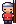
vakt
16×24
En vakt med hjelm og spyd som blunker og løfter spydet.
Idé
Sett vakta foran huleinngangen. Hun slipper deg ikke forbi før du har funnet sverdet eller tre mynter.
Bilder: vakt_1, vakt_2
katt
16×16
En oransje katt som sitter og logrer med halen.
Idé
Gjem katten et sted i skogen. Den som finner den, får et hjerte: liv = MAKS_LIV.
Bilder: katt_1, katt_2
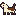
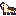
hund
16×16
En brun og hvit hund fra siden som rekker tunge og logrer.
Idé
La hunden følge etter helten: flytt den litt mot helt.x, helt.y i hver oppdater().
Bilder: hund_1, hund_2
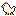
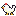
høne
16×16
En hvit høne som hakker i bakken.
Idé
Lag en hønsegård med gjerde rundt. Hva skjer om helten slår ei høne? (Kanskje kommer det mange flere ...)
Bilder: hone_1, hone_2
Ting
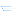
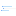
bue og piler
16×16
En bue å finne i en kiste, og en pil for hver retning (spissen peker dit pila flyr).
Idé
Når helten trykker en tast: pil = Figur(f"pil_{retning}", helt.x, helt.y + 8), og flytt pila noen piksler i retningen hver oppdater(). Fjern den når den treffer en fiende eller en vegg.
Bilder: bue, pil_opp, pil_ned, pil_venstre, pil_hoyre, pilspor_1, pilspor_2
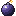
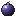
bombe
16×16
En bombe der gnisten på lunta blinker. Brukes sammen med eksplosjonen.
Idé
bombe.animer(["bombe_1", "bombe_2"], fart=6) og etter(2, smell). I smell(): vis eksplosjonen og bytt sprukne vegger til gulv med endre_rute.
Bilder: bombe_1, bombe_2
drikker
16×16
Rød drikk (liv) og blå drikk (magi eller fart).
Idé
Legg dem i kister: ["kiste", 3, 2, "drikk_rod"]. Rød gir fullt liv, blå gjør helten raskere en stund.
Bilder: drikk_rod, drikk_bla
utstyr
16×16
Fjær, støvler, lykt, skjold og ring – ting helten kan finne og bruke.
Idé
Støvlene kan øke FART, skjoldet kan halvere skaden, og lykta kan gjøre et mørkt rom lyst.
Bilder: fjaer, stovler, lykt, skjold, ring

edelsteiner
16×16
Slipte, kantede edelsteiner i tre farger.
Idé
Verdt mer enn mynter: grønn = 5, blå = 10, rød = 20. Bruk dem som ting på samme måte som mynt.
Bilder: edelstein_rod, edelstein_bla, edelstein_gronn
Terreng og objekter
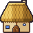
hus
48×48
Et lite hus med stråtak, pipe, bindingsverk, rund dør og to vinduer.
Idé
Tegn huset som en figur oppå gresset (som treet): Figur("hus", 3 * RUTE, 1 * RUTE), og legg usynlige hindringer (for eksempel "h": "gress_1" i HINDRINGER) under veggene i kartet.
Bilder: hus
brønn
32×32
En rund steinbrønn med vann, tretak og bøtte.
Idé
Midt på torget. Kanskje noe har falt ned i brønnen?
Bilder: bronn
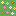
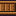
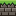
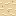
nye ruter
16×16
Hele ruter: blomsterbed, trebro, fjellkant (grå-brune steinlag), ørkensand, is og lava med flytende skorpeflak (animert).
Idé
Legg dem i RUTER: "=": "bro", "L": ["lava_1", "lava_2"] (animert). Lava kan skade helten hvis føttene står på den: sjekk rute_ved(...).
Bilder: blomsterbed, bro, klippekant, sand, is, lava_1, lava_2
objekter
16×16 (statue 16×24)
Gjerde, trestubbe, stige, gravstein og en ugle-statue på sokkel.
Idé
Bruk dem som figurer (de har gjennomsiktig bakgrunn) og legg ruta under i HINDRINGER. Gjerderutene kan legges rett ved siden av hverandre – da blir de ett sammenhengende gjerde.
Bilder: gjerde, stubbe, stige, gravstein, statue

stein (variant)
16×16
To lave, runde steiner side om side, på gress.
Idé
Bland stein og stein_2 i en steinrekke, for eksempel nederst i fjellet du lagde i steg 2: RUTER["s"] = "stein_2" og legg "s" i HINDRINGER.
Bilder: stein_2
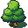
tre (variant)
32×32
Et ekstra tre med litt blåere løv og en annen kroneform.
Idé
Bland tre og tre_2 i skogen så den ikke ser lik ut overalt: velg bilde med "tre_2" if (kol + rad) % 3 == 0 else "tre" der trærne lages.
Bilder: tre_2
krystallbryter
16×16
En krystallkule på sokkel: grønn når den er av, lilla og lysende når den er på.
Idé
Slå på krystallen med sverdet for å åpne en dør, slik bryteren fjerner klossene i steg 7.
Bilder: krystallbryter_av, krystallbryter_paa
Effekter
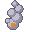
eksplosjon
32×32
Lysglimt, ildkule, røyk og røykrester.
Idé
smell = Figur("eksplosjon_1", x - 8, y - 8, lag=2) og smell.animer(["eksplosjon_1", "eksplosjon_2", "eksplosjon_3", "eksplosjon_4"], fart=6, gjenta=False, fjern_etterpa=True).
Bilder: eksplosjon_1, eksplosjon_2, eksplosjon_3, eksplosjon_4
magi
16×16
Lilla stjerner som snurrer rundt.
Idé
Vis magien over helten når hen drikker den blå drikken eller tar på krystallen.
Bilder: magi_1, magi_2, magi_3
Når du står fast
Alt spillmotoren kan, og navnene på alle bilder, lyder og all musikk. Du finner det samme
øverst i spillmotor.py.
Grunnmuren
from spillmotor import *
helt = Figur("helt_ned_1", 7 * RUTE, 4 * RUTE)
skritt = 0
def oppdater(): # kjøres 60 ganger i sekundet
global skritt # trengs når du ENDRER en variabel som står utenfor
if tast_holdes("hoyre"):
helt.x = helt.x + 1
skritt = skritt + 1
start(tittel="Mitt spill") # helt nederstSkjermen er 15 × 10 ruter. Hver rute er 16 × 16 piksler, altså 240 × 160 piksler
til sammen. x øker mot høyre, y øker nedover.
Rute (kolonne 3, rad 2) har øverste venstre hjørne i x = 3 * RUTE, y = 2 * RUTE.
Figurer, tekst og firkanter
| Kode | Hva den gjør |
|---|---|
Figur("navn", x, y) | en figur med et bilde fra mappen bilder/ |
figur.x, figur.y | posisjonen (øverste venstre hjørne) |
figur.bilde = "navn" | bytter bilde – slik animerer du |
figur.animer(["a", "b"], fart=10) | bytter bilde automatisk (lavere fart = raskere) |
figur.bredde, figur.hoyde | størrelsen på bildet |
figur.midt_x, figur.midt_y | midtpunktet |
figur.treffer(annen) | True hvis figurene overlapper |
Figur(..., treffboks=(2, 16, 12, 8)) | bare denne delen av bildet kan treffes (her: føttene) |
figur.synlig = False | skjuler figuren |
figur.fjern() | fjerner figuren for godt |
Figur(..., skygge=True) | liten skygge under føttene |
Figur(..., lag=0) | lag 0 = bakgrunn, 1 = figurer, 2 = effekter, 3 = tekst |
Tekst("Hei", x, y, farge="white", skygge="black") | tekst med pikselskrift. storrelse=2 gir dobbel størrelse, maks_bredde=200 bryter linjene |
tekst.tekst = "Ny tekst" | bytter teksten |
Rektangel(x, y, bredde, hoyde, "red") | en fylt firkant |
Kart og taster
| Kode | Hva den gjør |
|---|---|
tegn_kart(kart, ruter) | tegner et kart der hvert tegn er én rute |
rute_ved(x, y) | hvilket tegn som ligger på piksel x, y (eller None utenfor) |
endre_rute(kolonne, rad, "tegn") | bytter ut én rute, f.eks. når en dør åpnes |
tast_holdes("venstre") | True så lenge tasten holdes nede – til å gå |
tast_trykket("mellomrom") | True bare i øyeblikket tasten trykkes – til å slå og velge |
Effekter, lyd og tid
| Kode | Hva den gjør |
|---|---|
effekt("treff", x, y) | ferdig effekt: poff, treff, glitter, plask, stov, blader, gnister, hjerte, ild, vann, blad, lyn, stein, slag |
partikler(x, y, antall=10, farger=["red"], fart=1) | din egen sprut av piksler |
flytende_tekst("-3", x, y) | tekst som stiger opp og forsvinner |
figur.glimt() · figur.blink(1) · figur.rist() | figuren blir hvit · blinker i 1 sekund · rister |
rist_skjerm() · blink_skjerm("white") | hele skjermen rister · blinker |
overgang(funksjon) | toner ut, kaller funksjonen, toner inn. stil="kamp" gir blink og striper |
i_overgang() | True mens en overgang pågår |
spill_lyd("navn") · spill_musikk("navn") | spiller en lyd · starter musikk |
etter(2, funksjon) | kaller funksjonen om 2 sekunder (uten parenteser bak navnet!) |
tid() | sekunder siden spillet startet |
Feilmeldinger du kommer til å se
| Meldingen | Hva den betyr |
|---|---|
Fant ikke bildet "..." | Navnet er stavet feil, eller bildet finnes ikke. Motoren foreslår navn som ligner. |
Kjenner ikke tasten "..." | Tastenavnet er feil. Bruk "venstre", "hoyre", "opp", "ned", "mellomrom", "enter" eller en bokstav. |
NameError: name '...' is not defined | Du bruker en variabel som ikke finnes ennå – stavefeil, eller den lages lenger ned. |
UnboundLocalError | Du endrer en variabel inni oppdater() uten å skrive global navn øverst i funksjonen. |
IndentationError | Innrykket stemmer ikke. Alt inni en if eller funksjon må ha like mye innrykk. |
IndexError: list index out of range | Du spør etter en plass i en liste som ikke finnes – ofte en rute utenfor kartet. |
TypeError: ... 'NoneType' | Noe er None der du ventet en verdi. Glemt return i en funksjon? |
Alle bildene
Skriv navnet uten .png, for eksempel Figur("avsats", 0, 0).
Størrelsen er 16 × 16 piksler hvis ikke annet står i oppgaven.
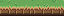
avsatsavsats_hoyreavsats_venstreavsatsfeste_hoyre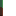
avsatsfeste_venstrebarn_1barn_2blomsterbedbombe_1bombe_2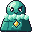
boss_1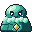
boss_2boss_maaler_ramme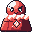
boss_skadet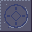
bossgulv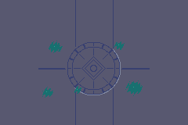
bossgulv_storbrobronnbryter_avbryter_paabue
busk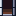
dor_aapen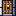
dor_laast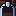
dor_toppdrikk_bladrikk_rodedelstein_blaedelstein_gronnedelstein_rodfx_blad_1fx_blad_2fx_blad_3
fx_blad_4fx_glitter_1
fx_glitter_2
fx_glitter_3
fx_hjerte_1fx_hjerte_2fx_ild_1fx_ild_2
fx_ild_3
fx_ild_4
fx_lyn_1
fx_lyn_2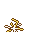
fx_lyn_3
fx_plask_1fx_plask_2fx_plask_3fx_poff_1
fx_poff_2
fx_poff_3fx_poff_4fx_slag_1fx_slag_2fx_slag_3
fx_stein_1
fx_stein_2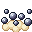
fx_stein_3fx_stov_1fx_stov_2
fx_stov_3fx_treff_1fx_treff_2
fx_treff_3fx_vann_1fx_vann_2
fx_vann_3
fx_vann_4eksplosjon_1eksplosjon_2eksplosjon_3eksplosjon_4fakkel_1fakkel_2fakkellys_hoyrefakkellys_indre_ohfakkellys_indre_ovfakkellys_nedfakkellys_oppfakkellys_venstrefjaer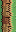
fjellside_hoyre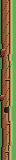
fjellside_stor_hoyre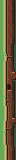
fjellside_stor_venstre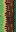
fjellside_venstrefjellskygge_hoyrefjellskygge_oppfjellskygge_venstre
flaggermus_1
flaggermus_2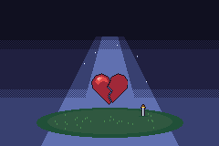
game_overgjerdegolem_1golem_2golem_skadetgravstein
gressgress_1
gress_2
gress_3
gress_blomst
gress_blomst_2
gress_storgulvskygge_hoyregulvskygge_indre_nhgulvskygge_indre_nvgulvskygge_indre_ohgulvskygge_indre_ovgulvskygge_nedgulvskygge_oppgulvskygge_venstregulvskygge_ytre_nhgulvskygge_ytre_nvgulvskygge_ytre_ohgulvskygge_ytre_ovhekk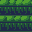
hekk_monsterhekkant_hoyrehekkant_indre_nhhekkant_indre_nvhekkant_venstrehekkant_ytre_nhhekkant_ytre_nvhekkant_ytre_ohhekkant_ytre_ov
helt_hoyre_1
helt_hoyre_2
helt_hoyre_3helt_hoyre_4helt_jubelhelt_ned_1
helt_ned_2
helt_ned_3helt_ned_4helt_opp_1
helt_opp_2
helt_opp_3
helt_opp_4helt_slag_hoyrehelt_slag_hoyre_1
helt_slag_hoyre_2helt_slag_hoyre_3
helt_slag_nedhelt_slag_ned_1helt_slag_ned_2helt_slag_ned_3helt_slag_opphelt_slag_opp_1
helt_slag_opp_2helt_slag_opp_3helt_slag_venstrehelt_slag_venstre_1
helt_slag_venstre_2helt_slag_venstre_3
helt_venstre_1
helt_venstre_2
helt_venstre_3helt_venstre_4
hjertehone_1hone_2hud_bakgrunn_hoyrehud_bakgrunn_venstrehud_hjerte_full
hud_hjerte_halvhud_hjerte_tomhud_mynthud_nokkelhulegulvhulegulv_2hulegulv_2_storhulegulv_monsterhulegulv_storhuleinnganghuleinngang_buehuleinngang_bue_hoyhulevegghulevegg_kappehulevegg_kappe_storhulevegg_mosehulevegg_storhulevegg_topphulevegg_topp_storhund_1hund_2husiskatt_1katt_2kiste_aapenkiste_lukketklippe_fotklippe_storklippe_toppklippehjorne_fot_hoyreklippehjorne_fot_venstreklippehjorne_topp_hoyreklippehjorne_topp_venstreklippekantklosskrukkekrystallbryter_avkrystallbryter_paalava_1lava_2lyktlyktespokelse_1lyktespokelse_2magi_1magi_2magi_3
mynt_1
mynt_2mynt_3
mynt_4
nokkelornament_hoyreornament_indre_nhornament_indre_nvornament_indre_ohornament_indre_ovornament_nedornament_oppornament_venstreornament_ytre_nhornament_ytre_nvornament_ytre_ohornament_ytre_ovpausemenypausemeny_dimpausemeny_pilpausemeny_valgtpiggsnegl_1piggsnegl_2pil_hoyrepil_nedpil_opppil_venstrepilspor_1pilspor_2ragna_1ragna_2ringsandskiltskjelett_1skjelett_2skjoldskogskog_storskogkant_hoyreskogkant_indre_nhskogkant_indre_nvskogkant_indre_ohskogkant_indre_ovskogkant_nedskogkant_oppskogkant_venstreskogkant_ytre_nhskogkant_ytre_nvskogkant_ytre_ohskogkant_ytre_ovskogskygge_indre_ovskogskygge_oppskogskygge_venstreskogskygge_ytre_ovskyggeslim_1
slim_2smed_1smed_2sopphopper_1sopphopper_2statue
steinstein_2steinbille_1steinbille_2sti
sti_2stige
stikant_hoyre
stikant_indre_nhstikant_indre_nv
stikant_indre_oh
stikant_indre_ov
stikant_nedstikant_oppstikant_venstre
stikant_ytre_nh
stikant_ytre_nv
stikant_ytre_oh
stikant_ytre_ovstovlerstubbe
sverd_hoyresverd_hoyre_1sverd_hoyre_2sverd_hoyre_3
sverd_nedsverd_ned_1sverd_ned_2sverd_ned_3sverd_oppsverd_opp_1
sverd_opp_2sverd_opp_3
sverd_venstresverd_venstre_1sverd_venstre_2sverd_venstre_3titteltrapp
tretre_2vakt_1vakt_2vann_1vann_2vann_3vannkant_hoyrevannkant_hoyre_2vannkant_hoyre_3vannkant_indre_nhvannkant_indre_nh_2vannkant_indre_nh_3vannkant_indre_nvvannkant_indre_nv_2vannkant_indre_nv_3vannkant_indre_ohvannkant_indre_oh_2vannkant_indre_oh_3vannkant_indre_ovvannkant_indre_ov_2vannkant_indre_ov_3vannkant_nedvannkant_ned_2vannkant_ned_3vannkant_oppvannkant_opp_2vannkant_opp_3vannkant_venstrevannkant_venstre_2vannkant_venstre_3vannkant_ytre_nhvannkant_ytre_nh_2vannkant_ytre_nh_3vannkant_ytre_nvvannkant_ytre_nv_2vannkant_ytre_nv_3vannkant_ytre_ohvannkant_ytre_oh_2vannkant_ytre_oh_3vannkant_ytre_ovvannkant_ytre_ov_2vannkant_ytre_ov_3veggkant_hoyreveggkant_indre_nhveggkant_indre_nvveggkant_indre_ohveggkant_indre_ovveggkant_nedveggkant_oppveggkant_venstreveggkant_ytre_nhveggkant_ytre_nvveggkant_ytre_ohveggkant_ytre_ovvinduLyder
spill_lyd("navn")
auboss_borteboss_brolbryterbumpdorfiende_bortegame_overglitterhjertekisteklosskrukkelaas_opplaastlite_livmeny_pipmyntnokkelseierskattsverdtekst_piptrapptreffvelg
Musikk
spill_musikk("navn") – spilles om og om igjen til du bytter eller kaller
stopp_musikk().
bosshulelandsbyoververdentittel